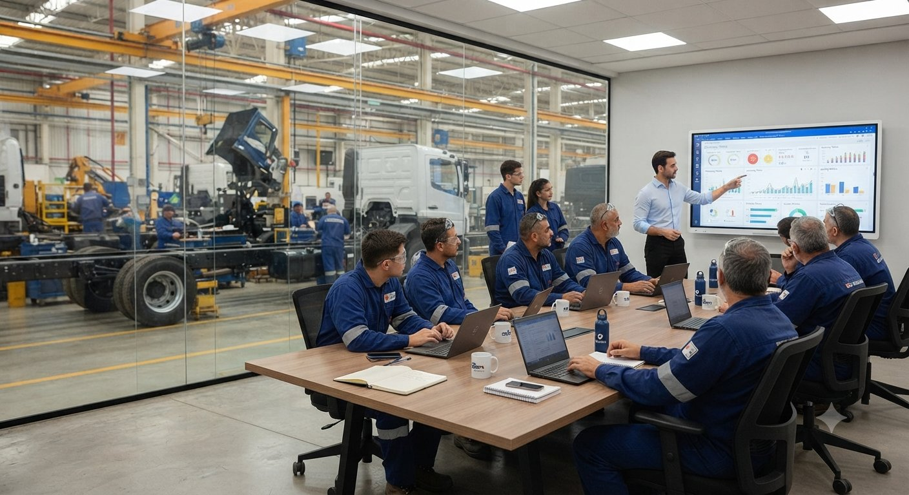

Primeiro entender o processo. Depois, os instrumentos.
O Sistema 4.0 segue uma sequência fixa: medir, localizar, compreender, intervir e acompanhar. Cada instrumento existe para uma dessas etapas.
Mapa do Sistema 4.0
- MedirComo está o engajamento da operação.IBEP-4.0
- LocalizarOnde o problema se concentra.Área · turno · liderança · grupo
- CompreenderPor que acontece ali.ITC-4.0análise qualitativa
- IntervirO que muda na liderança e na comunicação.PLH-4.0CAP-4.0CliftonStrengths
- AcompanharSe a mudança foi adotada e o ganho se mantém.ADM-4.0indicadoresreavaliação
Diagnóstico não é o fim do trabalho. É onde ele começa a fazer sentido.

O que cada instrumento mede e entrega.
Abra cada um para ver o detalhe técnico.
IBEP-4.0 · Medir Engajamento e experiência Índice de Bem-Estar, Engajamento e Pertencimento
O ponto de partida. Mede o estado de engajamento da operação e mostra onde ele está mais fraco — por área, turno e grupo.
Aplicação anônima, 16 itens em escala de 1 a 5. Os resultados são sempre agregados por grupo, nunca individuais.
Relatório executivo com o índice geral (GrandMean das seis dimensões), comparativo por área e turno e os três pontos de maior alavancagem para intervenção.
As seis dimensões
- D1Clareza e Recursos
- D2Talentos e Reconhecimento
- D3Liderança e Desenvolvimento
- D4Voz, Propósito e Qualidade
- D5Pertencimento
- D6Justiça e Orgulho
ITC-4.0 · Compreender Talentos e dinâmica da equipe Inventário de Talentos Colaborativos
Nem todo bom técnico é um bom líder de equipe, e nem toda liderança natural está no cargo certo. O ITC-4.0 mapeia como cada pessoa contribui para o time e ajuda a explicar por que um grupo funciona — ou trava.
Dossiê individual de perfil, mapa de composição de equipe e recomendações de alocação e sucessão.
Os seis perfis mapeados
- Executor
- Conector
- Guardião
- Catalisador
- Construtor
- Âncora
PLH-4.0 · Intervir Liderança e desenvolvimento Protocolo de Liderança Humanizada
O diagnóstico aponta onde intervir. O PLH-4.0 é onde a mudança de comportamento acontece — com as lideranças de linha, não só com a diretoria.
Plano de desenvolvimento individual por líder, com metas de 90 dias e comparação de evolução entre ciclos.
Estrutura do ciclo
- Diagnóstico individual de liderança
- Encontros mensais estruturados
- Ferramentas práticas de PNL e escuta ativa
- Casos reais da própria operação
- CliftonStrengths Top 5 aplicado a cada líder
- Reavaliação a cada ciclo de 90 dias
CAP-4.0 · Intervir Comunicação de Alta Performance CAP-4.0 — Comunicação de Alta Performance
Grande parte do que trava uma operação passa pela forma como a liderança ouve, pergunta e explica. O CAP-4.0 trabalha a comunicação do líder com cada pessoa e com o time.
Linha ética explícita: o líder aprende a reconhecer quando está sendo manipulado — e a não usar nenhuma técnica contra a própria equipe.
O que é trabalhado
- Inteligência emocional
- PNL aplicada
- Leitura de pessoas e adaptação da comunicação
- Influência ética e defesa contra manipulação
- Storytelling
ADM-4.0 · Acompanhar Prontidão para mudança Avaliação de Disposição para Mudança
Quando uma mudança perde força, a empresa costuma dizer depois que sentiu que algo não ia bem, mas não sabia dizer onde. O ADM-4.0 identifica, por área e por papel, em que etapa uma mudança específica está travando.
Usado quando há uma mudança concreta em curso — sistema novo, fusão, automação, mudança de turno, certificação. Dentro da Transformação, mostra se o que foi trabalhado com a liderança está sendo aplicado.
Mapa de calor por área com o ponto de barreira identificado, cruzamento com o IBEP-4.0 e plano de ação priorizado, com responsável e prazo.
Os cinco blocos avaliados
- Consciência — por que a mudança acontece
- Adesão — motivo pessoal para apoiar
- Conhecimento — como executar na prática
- Capacidade — conseguir aplicar sozinho
- Reforço — o que sustenta no tempo
Estrutura baseada no estudo publicado de Jeffrey Hiatt (2006).
CliftonStrengths
Ferramenta da Gallup, usada dentro do PLH-4.0 com cada líder. Enquanto o ITC-4.0 olha para o time, o CliftonStrengths identifica os talentos dominantes que moldam a forma como cada líder decide e se comunica.